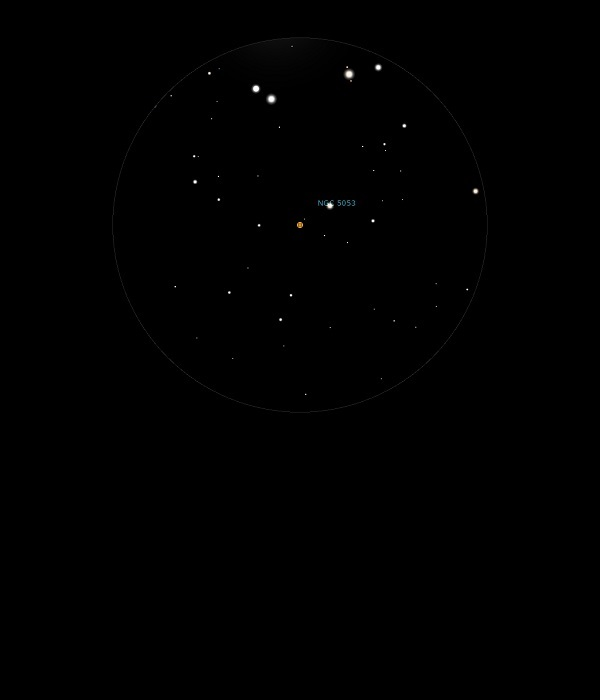

NGC 5053
Globular Cluster in Coma Berenices
NGC 5053
Mag 9.8
GC Class XI
30/04/13
The
merest hint, possibly
In the
right place
30/06/14
Perhaps just the slight hint of haze of this Mag 9.8 Globular
Cluster, just out of the FOV of M53 in 25mm
15/04/15
Just the merest hint of this very faint Globular Cluster in
moments of better than poor seeing!
No resolution at all and in fact easier to 'feel' in 25mm
rather than 12mm
This is supposed to be the most intrinsically faint of all the
Globular Clusters in the Milky Way so not surprising it is
hard to spot!
21/04/15
An even harder to detect Globular Cluster than NGC 5466,
viewed on the same evening
Perhaps just a hint in 12mm with inverted vision and moving
the FOV